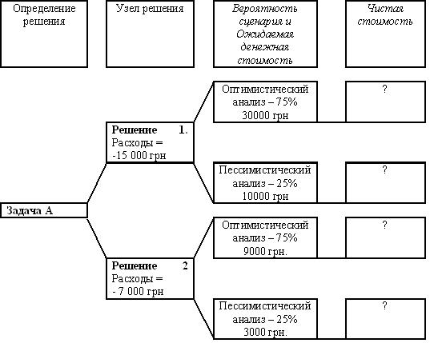

Вопросы для самопроверки
- Управление рисками проекта.
- Риск проекта.
- Матрица вероятности и последствий.
- Методы сбора информации для идентификации рисков.
- Методы отображения рисков.
- Метод Мозгового штурма.
- Метод Делфи.
- Метод идентификация основной причины.
- Диаграммы причинно-следственных связей.
- Системная диаграмма или диаграмма зависимостей процесса.
- Диаграммы влияния.
- Качественный анализ рисков.
- Количественный анализ рисков.
- Методы качественного анализа рисков.
- Методы количественного анализа рисков.
- Определите ожидаемую денежную стоимость для каждого узла вероятности и чистую стоимость с помощью дерева решений, а также cделать вывод о выборе наиболее привлекательного решения для задачи А рис.14.18.

Рисунок 14.18 - Дерево решений для задачи А
17. Стратегии реагирования на негативные риски (угрозы).
18. Стратегии реагирования на позитивные риски (благоприятные возможности).
19. Мониторинг и управление рисками на протяжении жизненного цикла проекта.
20. Стратегический менеджмент.
21. Алгоритм стратегического управления
22. Модель SWOT.
23. Модель GETS.
24. Основные параметры SWOT.
25. Процесс проведения внешнего аудита.
26. Процесс проведения внутреннего аудита компании.